[SH2, SH4] Did James Disappear 10 Years Back, or Just a Few Years Back?
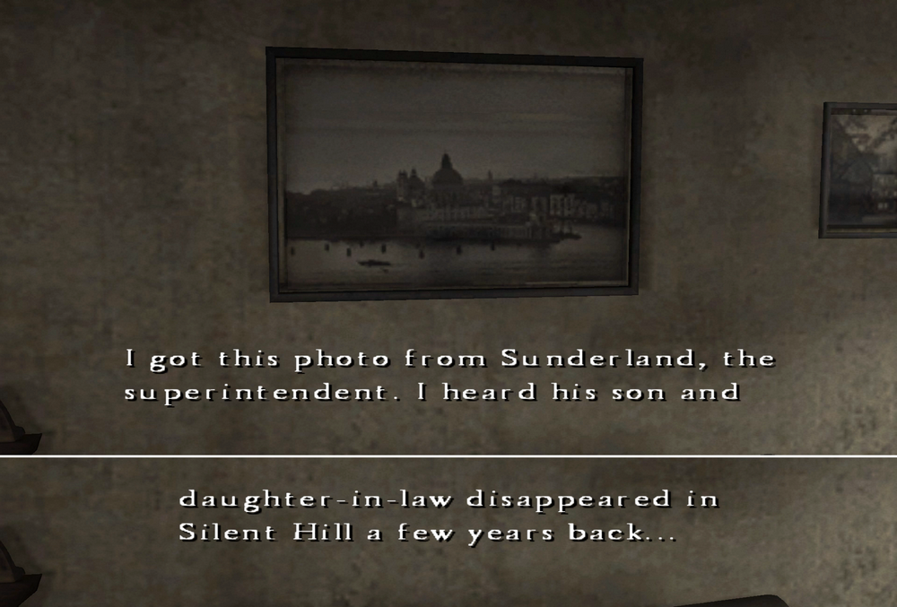
From "Silent Hill 4 Official Guide Complete Edition"
This is a mirror of the DeviantArt version linked above, provided as a backup and for easier access.

✅10 Years Back Theory
According to the Silent Hill 4 Complete Guide (pp. 162–163), Frank Sunderland's son is James, and SH2 happens 10 years before SH4.
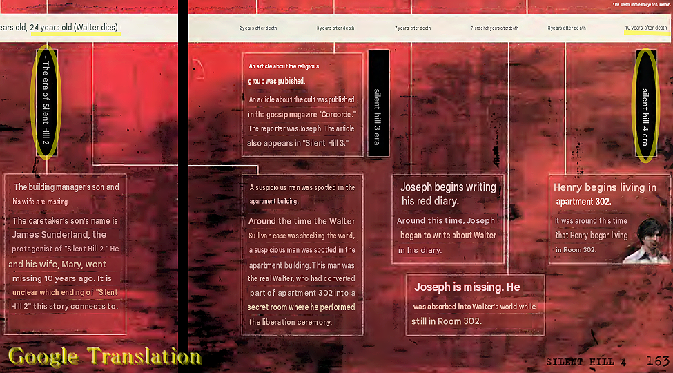
I mentioned in the article "SH1 to SH4 Era and Timeline" that there is a discrepancy in Heather's age in this guide.
But in SH4, Walter's incident also happened 10 years earlier, and he killed himself at that time. This means the timeline of SH2 and SH4 matches the game's timeline. So I think "10 years earlier" is correct here.
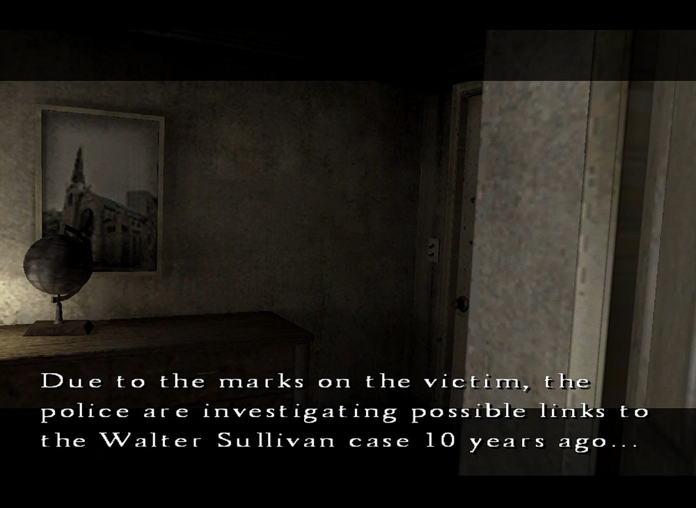
Then, the newspaper James found in SH2 was basically an article published at that time.
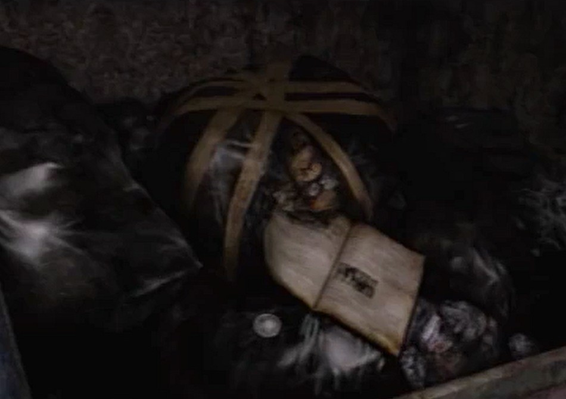
So James and Mary disappearance, in other words the ending of SH2, should also have taken place 10 years ago.
✅A Few Years Back Theory
But when looking at the picture, Henry just says "a few years back..."
I got this photo from Sunderland, the superintendent.
I heard his son and daughter-in-law disappeared in Silent Hill a few years back...
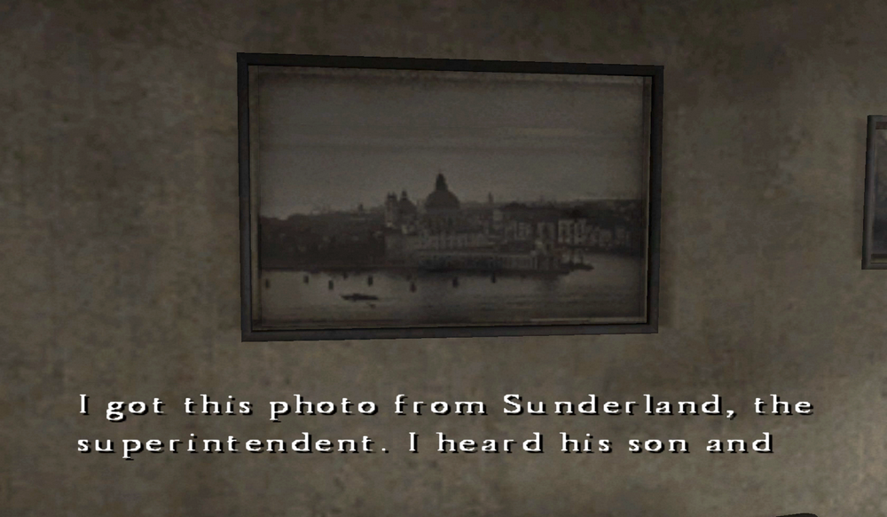
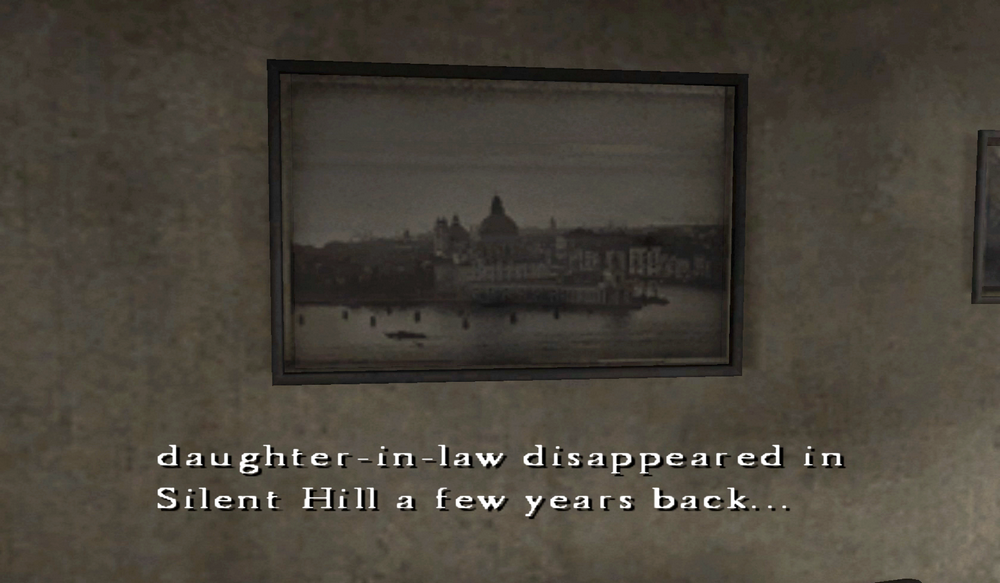
Why is that? The answer is simple.
Because Henry calls all his memories older than 2 years "a few years ago/back."
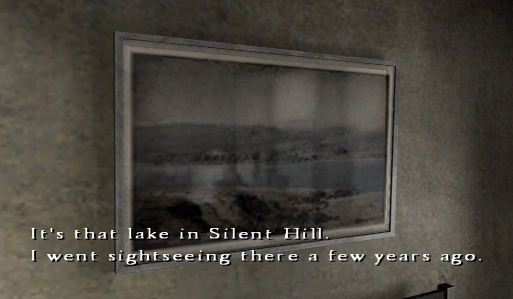
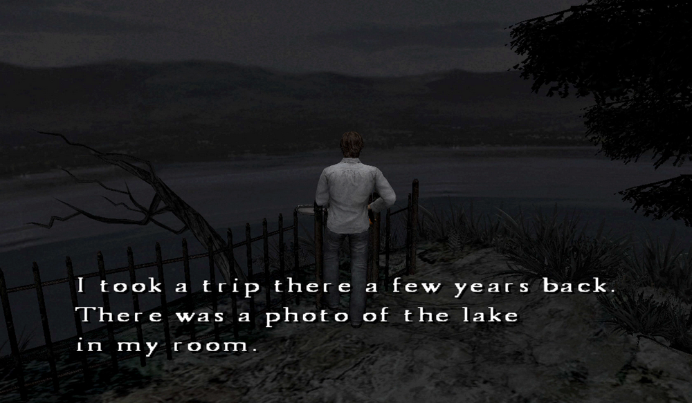
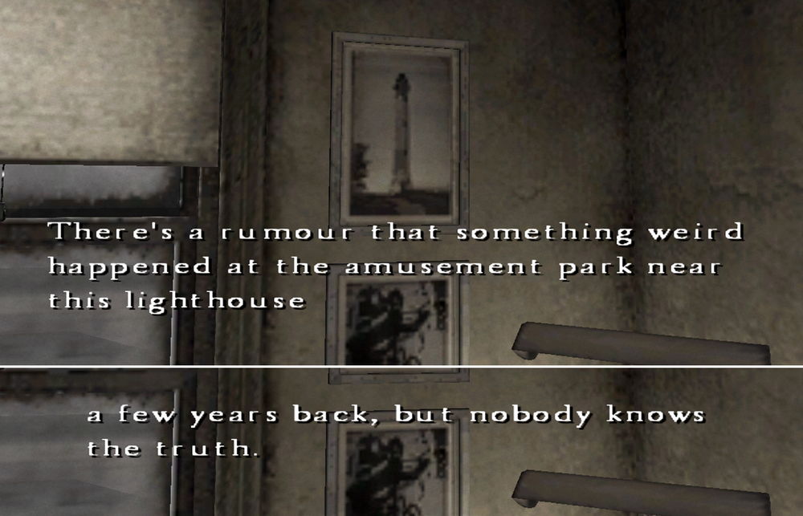
When it's way further back, he says "a long time ago."
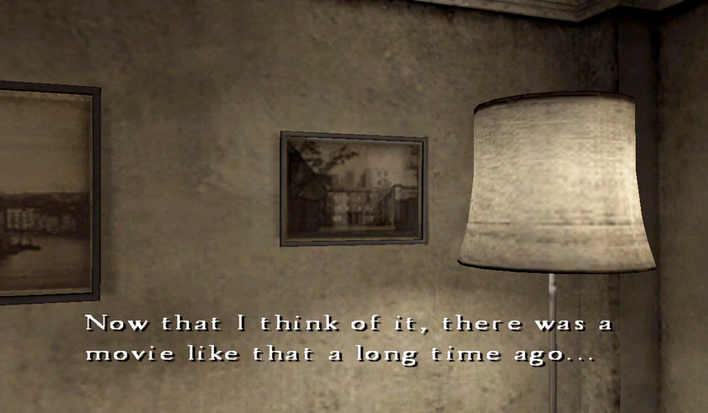
When he's not really sure, he also says "ages ago."
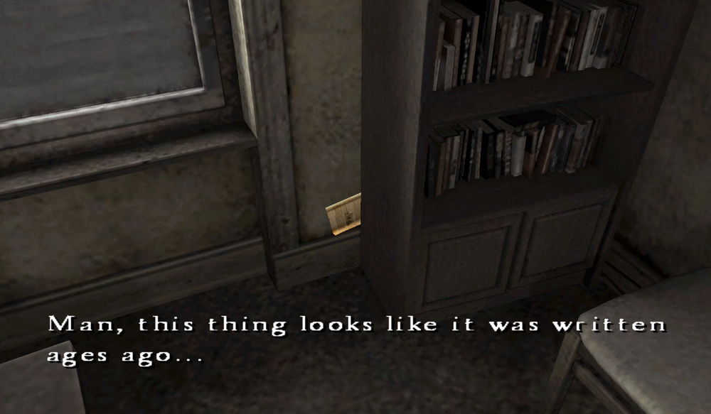
Well, this is because vague wording is used intentionally for gameplay reasons. It's not that Henry can't count numbers bigger than two. That's because he can actually tell the exact number of years from Joseph's diaries and similar materials.
So the disappearance of James and Mary is probably more accurate as "10 years ago" rather than what Henry says. But the guide also says, "It's unclear which ending it connects from."
Source: "Silent Hill 4 Official Guide Complete Edition" (First edition, July 20, 2004)